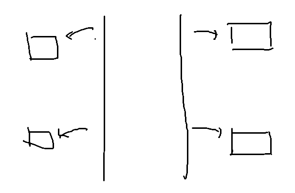
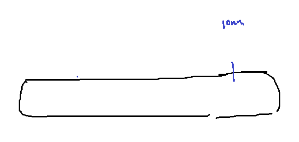

더인 교육 16일차
들어가며 · 웹사이트) nccvas - usergroups.avs.org · Etch 소재부품장비 · Etch 소재기술 · 첨가 Gas에 의한 Etch 공정 특성 · Etch 공정기술 · 차세대 식각 기술 2D vs 3D · 극 저온 Etch 기술 · 200mm 진공 Chamber와 300mm 진공 Chamber · 신입사원의 태도 · Process Chamber 구성 · Chamber Wafer 고정 기술 · 진공 Chamber 요소기술 · Gas cabinet 기술 · Mass Flow Controller · 진공 Chamber 요소기술 · 진공 Chamber 부품소재 · Plasma 관련 장치기술 · Plasma 관련 장치기술 · ICP Plasma · Etch 공정 진단/제어 기술 · Plasma 공정 진단/제어 기술 · 진공 Chamber 주변 구성 · 반도체 장비의 진공 장치 · Chiller 장치 기술 · Gas Scrubber 분해/산화 반응/포집 제거 · Ashing 공정 · Ashing 장비기술 · Bevel Etch 공정기술 · 유체의 정의와 특징 · 공대언니 · MFC 장치의 정기 점검 · 압력 제어밸브 분류 · 기본적인 진공에 대한 이야기 · 로봇 · Plasma 생성 메커니즘 · Magnetic Coupling pump는 2007년부터 반도체 라인에 들어오기 시작했음 · Diffusion 공정 기술 · 이온주입 기술 · 2D 이온주입 기술 · RTP 장비기술 · TEL의 Clean Room에 대한 이해 · Thin Film 기술 · BPSG → HDPCVD → SOD → Air gap · Thin film 기술 목표 · Thin film 기술 목표 Gas vs. Liquid · Thin film 기술 (CVD, PVD, ALD) · (1) CVD · (2) PVD · (3) ALD · (4) 전해도금 · (5) SOD
1. 들어가며
- 교재 사진 찍어서 옮겨놓기. 이건 사진 없으면 복습 불가능
- Etching, plasma 장비 수업 예정
2. 웹사이트) nccvas - usergroups.avs.org
- User group에 플라즈마, 박막 등의 내용이 있음.
→ 사이트 왜 안들어가짐?
3. Etch 소재부품장비
- 극저온 식각은 NAND 제품을 TEL 사에서 하기 시작했다? LAM도 극저온 식각
- WIW에서 Uniformity를 논한다면 Etch 시에 밀도가 높은 곳은 식각이 잘 안되고, 밀도가 낮은 곳은 식각이 잘 되는 상황을 말함
- 최근 Wet etch는 Dry Etch랑 대비되는 개념이라기 보다는 Cleaning 쪽으로 넘긴 것이다
4. Etch 소재기술
- Al을 식각할 때는 엔탈피 관점에서 Cl gas를 사용하는게 이득이다.
- SiO2를 식각할 때는 엔탈피 관점에서 F gas를 사용하는게 이득이다.
→ 발열이 되어야 에너지적으로 안정해지기 때문이다.
5. 첨가 Gas에 의한 Etch 공정 특성
- Etch Rate이 빠른게 좋다고 하지만 너무 빠르면 End point를 광학적으로 찾아낼 때 놓치면 찰나의 순간에 spec-out이 될 수 있다. 그래서 He를 사용하면 반응을 안하기 때문에 속도를 늦춘다.
6. Etch 공정기술
- 비정질 박막은 90도 가까이 되지만 결정질은 각도가 수직에 덜 가깝다.
- SAC는 1:20의 선택비로 Nitride가 버티면서 식각할 수 있게 해준다.
- ILD/IMD에 대한 얘기는 Etch stopper에 대한 얘기?
7. 차세대 식각 기술 2D vs 3D
(1) planar 2D
(2) 3D 소자 식각
- Exhuast는 지속적으로 계속 외부로 배출시키는 것이고, Purge는 일시적으로 한 번에 배출하는 것을 말한다.
- ALE는 100A 이하를 식각할 때 사용한다. Ref) ALD는 100A 이하 증착할 때 사용한다.
8. 극 저온 Etch 기술
- 다층 박막이 형성되어있는데 400~500도에서 공정이 진행되면 박막에 stress가 발생해서 문제가 된다. 따라서 저온에서 식각을 시켜준다.
- 400~500도로 세팅하는 것보다 -100도 정도로 세팅하는게 더 빠르게 할 수 있다. → 이러면 생산성이 높아지기 때문이다.
- 이제는 HF를 주로 사용한다.
- TEL에서 이미 290단은 공정에서 도입되었고 V10 400단도 양산에 적용할 예정이라고 한다.
- 플라즈마에서 전극으로 양이온이 때리게 하려면 bias를 걸어줘야지
9. 200mm 진공 Chamber와 300mm 진공 Chamber
- 200mm FAB하고 300mm FAB 할 때의 차이
– 각각의 사진을 찾아서 사진을 첨부하자.
(1) 200mm FAB
- Operation하는 곳은 Class-1 이고 Equipment 공정을 하는 곳은 Class-10
- Wafer가 오픈 되어 있는 카세트 타입이기 때문에 오염을 Class를 통해 관리를 해야한다.
- 50nm와 20nm 공정으로 넘어가기가 어렵다.
- 대만이나 중국에는 노출되어 있는 카세트를 SMIF 방식으로 보호 해준다.
(3) 300mm
- FOUP을 사용하고 필요할 때만 Open을 해준다.
- EFEM안으로 넣었을 때 Open 되는 구조이다.
- 50nm와 20nm 공정으로 넘어갈 수가 있는데 EFEM 안에 있는 Filter만 교체해주면 되기 때문이다.
- EFEM는 대기압이고, A와 B의 Load Lock Buffer Chamber가 있어서 중진공을 잡아준다. 그리고 Transfer chamber 에는 고진공이 잡혀있기 때문에 중간 다리 역할을 한다. 그러면 왜 가능한가? Chamber의 사이즈가 작으면 진공을 잡는데 걸리는 시간이 줄어들기 때문이다. 근데 Load Lock Chamber는 크기가 작다.
- A와 B가 in과 out이 구분되는데, 원래는 저게 하나로 되어 있었다. 저 구분이 되기만 해도 처리속도가 매우 빨라지게 된다.
- 대기 시간을 없애는 쪽이 생산성을 향상시키는 방법이다.
- 실온 Wafer를 A에서 Pre-Heat을 한다. 그러면 미리 heating이 되어있다면 Process Chamber에 들어가서 Heating 되는 시간을 줄일 수 있다.
Q. Process chamber 가 400~500도 인데, Transfer chamber는 상온이다. 이에 따라 어떤 문제가 생길 수 있는가?
A. 기공이 생기고 냉각이 충분이 되지 않아 기공이 뭉친채로 존재할 수 있다. 그래서 Two Buffer Chamber 에서 Heat/Cool 한다는 얘기는 TES에서 20nm Poly-Si을 시간을 줄이기 위해 450도 → 100도 좀 넘게 제대로 식히지 않고 생겼던 문제를 뭐 어쩌구저쩌구 한다는 내용
10. 신입사원의 태도
- 신입사원으로 들어가면 회사의 기술보고서를 보고 공부하기. 선배들나 사수가 멘토링을 해주지만 그걸 통해서 전부 알 수가 없다. 혼자 공부해야한다.
Ref)
- Vent를 시킨다.” 공기를 불어넣어준다. Vacuum의 반대 → 학연생 때 경험
11. Process Chamber 구성
- 진공을 잡는 방법은 벽면을 차갑게 만드는 것이다. 원래는 공기를 축소시켜서?
- Hot wall 방식으로 바뀌었다고 한다.
- ESC 는 정전기적으로 잡는 형태. Wafer는 도핑을 시켜주기 때문에 + 전하를 띤다. 따라서 -를 charging 시켜주고 그렇게 잡는다.
- LAM의 경우 wafer 온도를 제어하기 위해서 144개의 분할된 위치에서 제어한다고 함.
- Gas purifier는 고순도로 만들기 위해서 정제해주는 것임. 8개의 gas 분배기가 존재한다고 함.

- Gas가 들어가면 들어갈 때 제어를 해줘야 한다. CDA와 GN2는 벨브 제어를 할 때 사용한다. 몇 대의 장비를 사용하냐에 따라 중앙에서 나오는 Gas로부터 동일한 양의 gas량이 주입될 수 있게끔 제어를 해줘야한다.
- 공정을 진행하는 장비에서는 일정한 유량이 들어오길 원할거 아니야?
– 주입되는 쪽은 Air Regulator, 나가는 쪽은 Vacuum Ejector으로 제어해준다.
- ICP에서 가 플라즈마 와 wafer 간의 gap을 조절할 수 있다. 그래서 plasma 가 반응하는데 섞이지 않게 해주게 된다. 이건 분명한 장점이다.
- 하지만 center, 위에도 균일하게 만들어줘야 한다. 그리고 LAM에서는 코일을 감아서 상단부분에도 플라즈마가 균일하게 생성될 수 있도록 해준다.
→ 결국 플라즈마 균일도를 향상시키기 위해서이다. 특정 부분에서만 플라즈마가 생기는 것은 반응을 케어할 수 있다는 점에서 좋지만 균일하게 모든 곳에서 플라즈마가 생성되지 않는다는 것이 단점이다.
12. Chamber Wafer 고정 기술
- Wafer는 기본적으로 양 전하.
- Electrostactic 방법을 사용하는 정전기적인 힘으로
- 예전에는 Clamp Ring을 사용했고, 저 부분이 오염된다.
- Topside Contact도 사용했지만 휘어졌다?
- 550도에서 진행하는 ESC 같은 경우는 국산화가 안되어있기 때문에 개당 1억원이다. 이 Chuck 자체 너무 비싸 국산화하려고 함
– 예전에 삼성 16라인에서 Chamber가 700개, 17라인에서 Chamber 1000개라면 1년에 17라인 기준으로 1000억씩 드는 것이다.
– 미코세라믹스와 보보?하이텍이 국내에서 ESC Chamber를 제작중이다.
13. 진공 Chamber 요소기술
- Wafer를 보면 선과 면 간의 온도 편차가 존재한다. 그래서 저항 코일 옆에다가 열전도도가 높은 소재를 사용한다. 참고로 전기전도도와 열전도도는 같이 사용한다.
– 그냥 잡지식) 다이아몬드는 부도체라 전기전도도가 0인데, 열전도도는 2000~3000
- 그래서 AiN 같은 경우 열전도도가 좋으니 코일과 같이 사용해서 균일하게 Heating 하려고 한다.
14. Gas cabinet 기술
- process chamber 안에서 중요한건 안의 내부가 녹슬면 안되는 것이다.
- SUS는 Cr+Sn+Zn → 맞는지 찾아보기
- 하지만 현재는 SUS 304 조차도 Exhaust 관으로 사용하지 않으려고 한다. 예전에는 배기하는 곳은 신경안썼지만 이제는 문제가 생길 수 있다고 판단해 SUS 316을 사용한다고 한다.
- 장비에서 균형이 깨졌을 때 이러한 배관에서 이슈가 생기면 들어오고 나가는 것의 차이가 발생하니 균형이 깨지는 것일 수도 있다.
대상: “장비에서 균형이 깨졌을 때 이러한 배관에서 이슈가 생기면 들어오고 나가는 것의 차이가 발생하니 균형이 깨…”
이런 관점 배워가기
15. Mass Flow Controller
- 전류와 유량이 비례하는 그래프를 갖는다.
- 1년 마다 Calibration을 시켜줘야한다.
- 유량생성 방식과 차압방식이 있다.
16. 진공 Chamber 요소기술
- 중앙 부분에서 gas가 나오면 당연하게도 중앙 부분이 빠르게 되겠지? 그래서 그걸 해결하기 위해 Baffle/shower Head가 존재한다.
- 단일 층에 수백 개의 Hole이 뚫려있다. 그래서 gas가 나오는 곳에서 1차로 분산된 gas가 쫙 퍼질 수 있게 해준다. 중앙 아래 그림이 AMAT 사의 2020년 특허로 Gas를 균일하게 분산되게 해주는 방법이다.
17. 진공 Chamber 부품소재
- 이것좀 재밌어보인다. 다시 보면서 정리해보기.
- 세라믹을 많이 사용하네
- Hot Edge Ring이 수명이 매우 짧다. 그래서 Y2O3 (이트리아) 이걸 SiC 표면에 코팅해서 교체 주기를 길게 만들려고 했다. 반영구성 부품들은 보통 챔버를 열면 교체를 해준다고 함. 200시간 기준으로 다른 건 수명이 남았어도 교체해버린다. 남은 수명을 고려하기 보다는 빠르게 교체하고 안정화 시키는게 생산의 관점에서는 아깝지 않다는 것이다.
- Lam Research 특허 중에 Tunable Edge Ring 특허가 있다. Ring의 높이를 제어한다?
18. Plasma 관련 장치기술
- RF Matcher는 산란이 생기는 것을 막아주는 역할이다. + 플라즈마 안정화
- Ar은 700nm에서 peak가 가장 강하고 그래서 보라색이다?
- 플라즈마와 배기되어 들어오는 gas가 만나면 plasma가 변형된다?
- VI probe 를 이용해서 Impedance(회사명)을 표시한다.
19. Plasma 관련 장치기술
- CCP하고 RIE는 상압에서도 진행할 수도 있다.
- RIE 방식에서 단점은 플라즈마 위치가 제어가 안되기 때문에 Gas가 들어오는 부분과 플라즈마가 생기는 부분이 섞이는 원하지 않는 상황이 발생한다. → ICP 방식으로 해결
20. ICP Plasma
- 안테나 코일에 RF 파워를 걸어주는 방식
- LAM Research 특허라고 한다.
21. Etch 공정 진단/제어 기술
- 빛이 나타나면 빛을 파장 별로 스펙트럼을 분석한다. 350nm 아래에 빛은 흡광되어버린다. 하여간 딱히 안보인다는 것이겠지.
- 쭉 식각을 하다가 특정 gas 성분에서 peak가 발생되는 것을 통해서 모니터링한다.
- 식각을 하다가 기울기가 달라지고, 이를 End Of Point를 잡는다. EOP를 잡는다라고 말한다.
- EOP를 기준으로 Over Etch를 진행해서 주변에 있는 잔류 막을 제거해주게 된다. EOP가 60초로 잡혔다면 Over Etch는 30초 동안 더 진행해주는걸 50%라고 한다.
22. Plasma 공정 진단/제어 기술
- SP OES를 통해서 장비 안에서 이상 상황을 발견하고 판단한다.
- Process Chamber내에서 사용하고 있는 gas가 아닌데 발견이 되면 밸브에 이상이 생긴 것이잖아? 그걸 peak를 통해서 파악한다는 것이다.
- 밖에는 고진공이고, 내부는 저진공이라면 압력 차에 의해서 분명 gas가 들어오고자 하는게 기본 상황이라는 것이지.
- N2 gas가 사용되면 해당 peak만 발생되어야 하는데 Ar의 강한 Peak가 같이 발견되면 문제가 생기는 것이다.
23. 진공 Chamber 주변 구성
- Chamber와 Chamber 간의 이동하는 통로인 Transfer valve, 또 gas가 나가는 Exhaust Valve 등이 있다.
24. 반도체 장비의 진공 장치
- 로티리 펌프는 공기를 흡입해서 압축 배기 하는데 맥동처럼 값이 탕탕 튀게 된다. 이런식의 기계 거동은 특정 공정들에서는 바람직하지 않다. 통통 튈 때 데미지가 가해지기 때문이다.
- 가벼운 He gas 들과 같은 경우 흡입은 어떻게 될 수 있지만, 배기가 안되고 역류한다고 한다.
- 이 경우에 Cryo-genic pump를 사용한다.
– 차가운 물체에 손을 대면 뗄 때 저항감이 느껴지는데 이는 에너지를 빼앗기기 때문이다.
– 하지만 plate를 냉각 시켜야 하기 때문에 준비시간이 너무 오래걸린다.
– 내부의 다공성 재료는 소모성이기 때문에 교체 해줘야 한다.
– H2, He와 같이 가벼운 기체에 사용하지만 이러한 기체를 사용하는 공정만 있는건 아니니까.
25. Chiller 장치 기술
- 옛날에는 coolant w/ Ethylene glycol 을 사용. 마치 자동차 부동액
- 불소 계 냉매 gas는 3M에서 공급해줌. 우크라이나 전쟁 때문에 공급 안돼서 난리났던 적 있음
26. Gas Scrubber 분해/산화 반응/포집 제거
- 독성 Gas 에는 Cl2, 가연성 gas에는 SiH4, PH3, 유해가스에는 불화가스
- 그러니까 이건 결국 다양한 gas 들을 어떻게 안전하게 처리하는 지 적혀 있는 것임.
- 산화시키고, 가열하고 등등
27. Ashing 공정
- 유기물을 산소하고 반응시켜서 CO/CO2 탄화시킨다.
- 주로 산소 라디칼을 사용하는 등방성 식각이 지배적이다.
- 상당히 TT(Throughput)가 높은 장비
28. Ashing 장비기술
- 별도의 Microwave 발생 장치가 필요하다.
- Remote plasma chamber를 사용해서 플라즈마를 생성한다.
- PSK가 Ashing 장비 쪽에서 42%로 1등이라고 한다.
- Etch에서는 Process chamber에 직접 들어가는 gas에는 Etching gas, 불활성 기체, O2를 넣어서 측벽을 보호해주는 gas가 필요하다. CVD는 더 복잡하다.
- 하지만 Ashing은 간단하기 대문에 이렇게 많이 한 번에 할 수 있다는 것을 말해주는 것이다.
29. Bevel Etch 공정기술
- Cu 도금 후 잔류 제거

- Wafer의 10mm 지역까지를 Edge라고 부른다. 더 정확히는 Bevel? 이라고 부른다.
- Bevel에 있는 것을 에칭을 해줘야 한다고 한다. 파티클이 생기기 때문이다.
- 실질적으로 문제가 생기는건 도금 방식에서 문제가 생긴다고 한다. 그냥 부푸는건 Etch로 제거가 된다고 한다.
30. 유체의 정의와 특징
- 기체나 액체와 같은 경우는 계속 힘을 가해주면 계속 변형이 됨
- 고체는 일정 수준까지 변형하다가 평형 상태에 도달한다.
- 점성 유체는 …
ref) 대표적인 점성 유체는 PR은 N2 gas로 밀어내더라도 벽과 마찰이 심하다고 한다.
31. 공대언니
[공대언니 이지공압](https://www.youtube.com/@ezpneumatic)
- 에어필터, 공압 기술에 대한 영상
- 대기 중에 산소 질소 탄소 유분.. → 정화해서 구동기기로 보내야한다. 그래서 에어필터를 사용한다.
32. MFC 장치의 정기 점검
- 장비 엔지니어들은 Zero 점 출력 확인, 제어 상태 확인, 범위 확인, 접합 부 상태 확인, 실제 유량 확인 → 이런 것들이 장비 엔지니어들이 하는 일
33. 압력 제어밸브 분류
1. Relief 밸브
- 내부의 압력이 상승하면 밖으로 배출 될 수 있게
2. Air Regulator
- 앞에서 배웠던 것
34. 기본적인 진공에 대한 이야기
- 각종 정의 이론
35. 로봇
- 원통 좌표 로봇이고, 다관절형 로봇
36. Plasma 생성 메커니즘
- sheath 영역은 발광이 일어나지 않아서 실제로 검은색임
- 플라즈마 설계의 기본은 플라즈마 포텐셜이 일정한 구간에 웨이퍼가 오게 하는 것이다.
37. Magnetic Coupling pump는 2007년부터 반도체 라인에 들어오기 시작했음
38. Diffusion 공정 기술
- Junction, Oxidation, CVD 방법들이 전부 확산이라고 말할 수 있다?
39. 이온주입 기술
- 필요한 불순물을 골라내야한다.
- 필요한 불순물을 주입을 시키기 위해 적절한 에너지로 주입시켜준다.
- 필요한 깊이 만큼 넣어주게 된다.
40. 2D 이온주입 기술
- Well을 형성할 때, MOS에서 Source, Drain을 형성할 때가 있다.
- Well을 형성할 때는 너무 큰 에너지로 주입하며 결함이 생긴다.
- Gas Box에서 1 → 2 → 3… 책의 순서를 얘기하는건데 이전의 강사님이 해주신 수업을 복습하는게 더 좋을 듯함
중간 필기는 책에
41. RTP 장비기술
열전달
1. 전도
분자들이 열에너지를 받으면서 분자들이 움직이면 …
2. 대류
모닥불 위에 손을 올려두면 뜨거운건 대류에 의한 것임. 보일러에서 아래에 공기가 뜨거워져서 위쪽으로 올라가기 때문에
3. 복사
전자레인지는 빛과 열을 사용
→ Lamp에서 빛이 나와도 진공이라 매질이 없음에도 복사에 의해 뜨거워진다.
42. TEL의 Clean Room에 대한 이해
- TEL 의 특허를 많이 찾아보면 배울 것들이 많다. (이론 공부 다 하고 나면 특허 공부를 하자)
예전 200mm system (사람이 했던 시대)
- 예전에는 오퍼레이터가 2인 1조로 근무하며 카세트를 직접 Loading을 했다.
- 전통적인 개념은 4개의 stage를 사용해서 공정을 진행했던 것이다.
- Stage를 꼭 4개 일 필요가 없다는 생각에 너비를 매우 줄일 수 있었다.
- Furnace 장비는 70~80% TEL이 차지
- 이러한 장비의 개발 방향은 공정 기술자가 고려하는 것이다.
43. Thin Film 기술
- 비저항이 가장 낮은 건 Cu. 구리의 Electron m.f.p 값이 26?36? 그래서 전자 산란이 일어난다. 그래서 전기가 타고 오다가 30%가 손실된다고 한다.
- 청주 M15X는 M1 이전까지, M16은 M1 이후 구리부터 작업을 진행한다.
- Cu 전자의 산란을 막기 위해서 TaN을 적용한다.
- Al의 배선의 녹는점은 450도에서 녹아버린다. 그래서 높은 온도에서 후속 공정을 진행하면 안된다. 그래서 Al을 증착하고 나서는 400도 이하의 공정을 진행한다.
- Al은 PVD 방식 밖에 안된다. 따라서 결정이 어떻게 되어서 stress에 불리하다.
- Al는 접착이 잘 안되기 때문에 W나 Al 같은 경우 Ti가 glue layer 역할을 한다. Cu는 Ta가 glue layer 역할을 한다.
- WF6 + SiH4 → W를 형성 하는데 F가 Si와 만나면 SiF4가 생기면서 날라가 버리기 때문에 TiN을 통해서 확산되지 않도록 막아준다.
- poylside는 예전에 많이 사용했던 방식이라고 한다.
- Contact plug 용 금속 LPCVD 에는 Ti, Ti, TiN 등등
44. BPSG → HDPCVD → SOD → Air gap
- BPSG는 대략 180nm나 일부 회사는 90nm까지
- HDPCVD는 대략 70nm까지
- SOD는 전부 가능하다.
- Word line 사이는 air gap을 사용하지 못한다. Bit line 사이는 air gap을 사용해도 된다.
- PMD는 그냥 ILD랑 같다고 한다. 우리나라에서는 ILD 외국에서는 PMD라고 한댄다.
45. Thin film 기술 목표
- Gap fill이 매우 중요하다.
- CVD는 특징적으로 overhang이 생기게 된다.
- Step coverage가 먼저가 아니라 gap fill이 되냐 안되냐. 그래서 Void가 생겼냐? 가 중요한 것이다.
- Hole과 Hole이 void로 인해 연결되면 증착이 안되어야 할 곳까지 연결되며 문제가 생긴다.
46. Thin film 기술 목표 Gas vs. Liquid
1. Gas
(1) PVD
- PVD는 결국 Target이 중요하다. 여기에서 Five nine, six nine 이런 수치가 중요하다.
- 독일 같은 곳에서 수입해서 온다고 한다.
- Evaporation 같은 경우는 sputtering 방식과 반대로 아래에서 위로 증착을 시키며 대형 디스플레이와 같은 경우에 사용한다.
(2) CVD
- PE-CVD
– 플라즈마를 사용
- MOCVD (Metal Organic CVD)
– 금속 기반 Ti기반 전구체, Ta 기반, Cu 기반 전구체를 사용
- ALD
– 얘도 전구체 기반
2. Liquid
- Electro process
- spin coating
47. Thin film 기술 (CVD, PVD, ALD)
48. (1) CVD
- 플라즈마가 켜지지 않은 상태에서는 반응 자체가 매우 느리게 일어난다. 하지만 접착력이 매우 좋다. 그러면 Gas 반응을 통해서 미리 어느정도 깔아놓고 플라즈마를 사용해서 그 이후를 쫙 증착시키면
- CVD는 불순물들이 너무 많다. 그래서 가열을 하게되면 불순물들이 빠져나가게 된다. 따라서 열 컨트롤이 매우 중요한다.
- 휘발되는 부산물들이 빠져나가는 배관 라인에 쌓이면 안된다.
49. (2) PVD
- 플라즈마로 Ar+ 를 만들어주고 전극에 직렬(DC Bias)로 -를 걸어준다. 이 때 -를 얼만큼 충전시키냐에 따라 충돌 에너지가 결정된다.
- Target 자체에 불순물이 없다. Ar+는 순수한 기체, Target 물질 뿐이니까
- 하지만 결정질 박막이 형성된다는 것이 문제가 된다.
50. (3) ALD
- 원하는 물질만 반응 시키고, 나머지는 날려준다. (이건 너무 대충)
51. (4) 전해도금
- Cl과 고분자가 잘 반응한다?
52. (5) SOD
- spin on coating